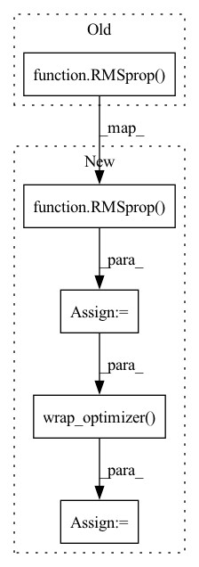

Pattern ID :41708

Before Change
model.add(Activation("softmax"))
model = self.context.wrap_model(model)
model.compile(
RMSprop(lr=self.base_learning_rate, decay=self.learning_rate_decay),
categorical_crossentropy,
[categorical_accuracy, categorical_error],
)
After Change
model = self.context.wrap_model(model)
// Create and wrap the optimizer.
optimizer = RMSprop(lr=self.base_learning_rate, decay=self.learning_rate_decay)
optimizer = self.context.wrap_optimizer(optimizer)
model.compile(
optimizer,
categorical_crossentropy,
In pattern: SUPERPATTERN
Frequency: 3
Non-data size: 5
Instances
Fragment ID: 116989809
Project Name: determined-ai/determined
Commit Name: 765275a0cb8ffda09ff01a0dfaa0955e6541a000
Time: 2020-11-09
Author: aaron@determined.ai
File Name: examples/computer_vision/cifar10_tf_keras/model_def.py
M Class Name: CIFARTrial
N Class Name: CIFARTrial
M Method Name: build_model(1)
N Method Name: build_model(1)
M Parent Class: keras.TFKerasTrial
N Parent Class: keras.TFKerasTrial
M File Name: examples/computer_vision/cifar10_tf_keras/model_def.py
N File Name: examples/computer_vision/cifar10_tf_keras/model_def.py
M Start Line: 97
M End Line: 97
N Start Line: 100
N End Line: 104
'>
Before Change
model = tf.keras.models.Model(image, probs, name="mnist")
model = self.context.wrap_model(model)
model.compile(
RMSprop(lr=self.base_learning_rate, decay=self.learning_rate_decay),
loss="sparse_categorical_crossentropy",
metrics=["sparse_categorical_accuracy"],
)
After Change
model = self.context.wrap_model(model)
// Create and wrap the optimizer.
optimizer = RMSprop(lr=self.base_learning_rate, decay=self.learning_rate_decay)
optimizer = self.context.wrap_optimizer(optimizer)
model.compile(
optimizer=optimizer,
loss="sparse_categorical_crossentropy",
'>
Fragment ID: 116989810
Project Name: determined-ai/determined
Commit Name: 765275a0cb8ffda09ff01a0dfaa0955e6541a000
Time: 2020-11-09
Author: aaron@determined.ai
File Name: examples/data_layer/data_layer_mnist_tf_keras/model_def.py
M Class Name: MnistTrial
N Class Name: MnistTrial
M Method Name: build_model(1)
N Method Name: build_model(1)
M Parent Class: TFKerasTrial
N Parent Class: TFKerasTrial
M File Name: examples/data_layer/data_layer_mnist_tf_keras/model_def.py
N File Name: examples/data_layer/data_layer_mnist_tf_keras/model_def.py
M Start Line: 60
M End Line: 60
N Start Line: 63
N End Line: 64
'>
Before Change
model = self.context.wrap_model(Model(inputs=inputs, outputs=dense2))
model.compile(
RMSprop(
lr=self.context.get_hparam("learning_rate"),
decay=self.context.get_hparam("learning_rate_decay"),
),
categorical_crossentropy,
[categorical_accuracy],
)
After Change
model = self.context.wrap_model(Model(inputs=inputs, outputs=dense2))
// Create and wrap the optimizer.
optimizer = RMSprop(
lr=self.context.get_hparam("learning_rate"),
decay=self.context.get_hparam("learning_rate_decay"),
)
optimizer = self.context.wrap_optimizer(optimizer)
model.compile(
optimizer,
categorical_crossentropy,
'>
Fragment ID: 116989813
Project Name: determined-ai/determined
Commit Name: 765275a0cb8ffda09ff01a0dfaa0955e6541a000
Time: 2020-11-09
Author: aaron@determined.ai
File Name: examples/computer_vision/iris_tf_keras/model_def.py
M Class Name: IrisTrial
N Class Name: IrisTrial
M Method Name: build_model(1)
N Method Name: build_model(1)
M Parent Class: keras.TFKerasTrial
N Parent Class: keras.TFKerasTrial
M File Name: examples/computer_vision/iris_tf_keras/model_def.py
N File Name: examples/computer_vision/iris_tf_keras/model_def.py
M Start Line: 64
M End Line: 67
N Start Line: 66
N End Line: 73